DanteCTF 2023 - [Radio Frequency] - Forensics
Imago Qualitatis
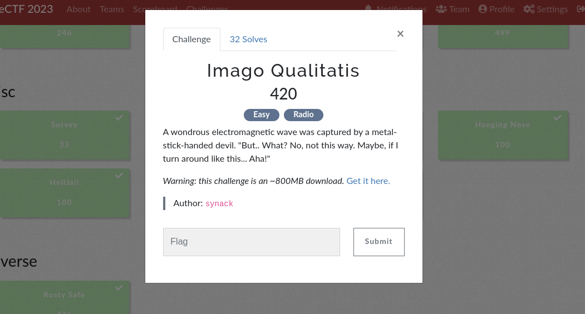
Difficulty: Easy
Category: Forensics
Flag: DANTE{n3w_w4v35_0ld_5ch00l}
First as always , lets download the file and see what we can do. This can take sometime since its not a small download (834 MB).
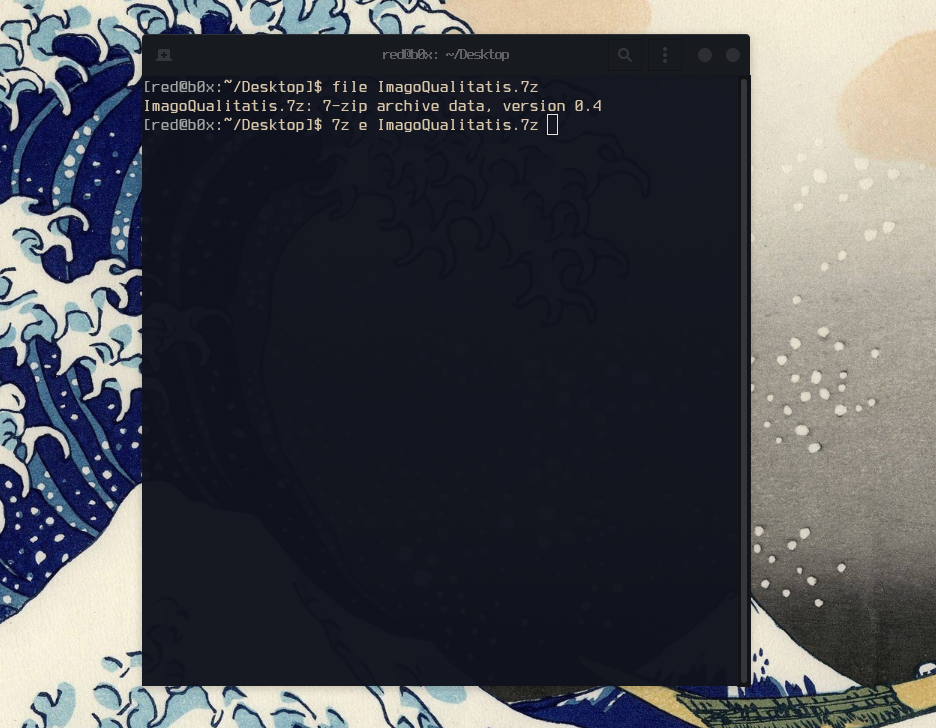
As we can see its a 7-Zip archive, lets extract what’s inside this zip by running this command7z e ImagoQualitatis.7z .
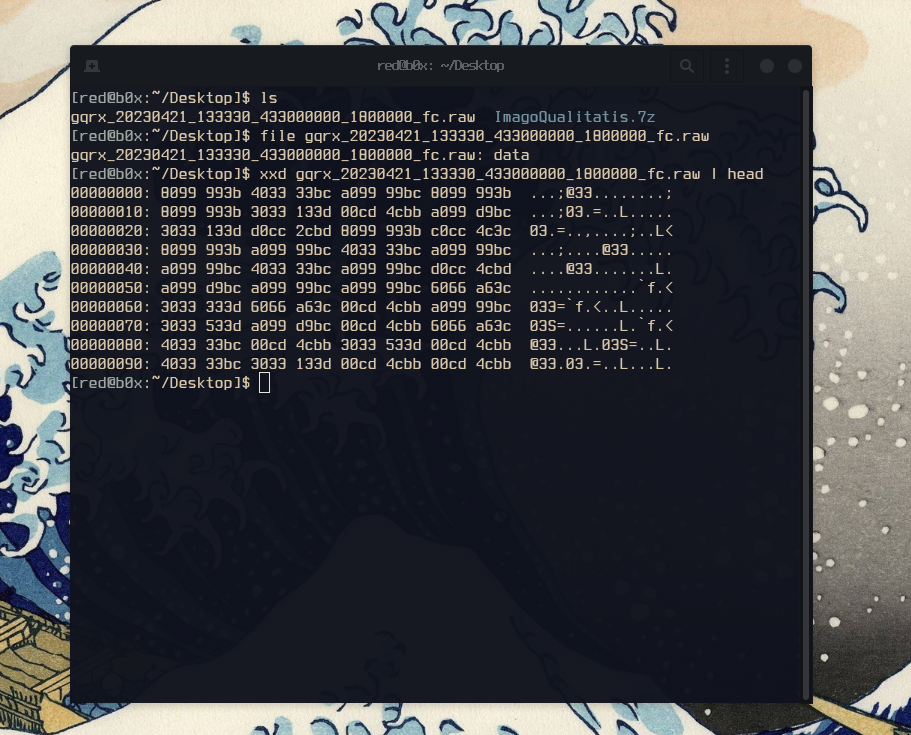
Great, we extracted the file successfully ! I checked what type of file we are working with but no useful results came up, as well as I noticed that the size of it is very large being 4.6 GB. On top of that I also checked the file header , no luck there either even after some googling. We for sure know its something to do with RF so i researched a bit on software used to open such files, and to my luck i found a software called GQRX, which also is mentioned in the file name !
Let’s install it and give it a shot
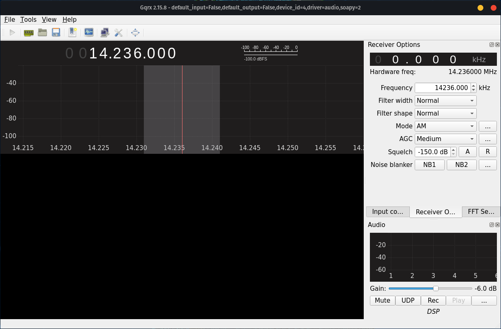
Interesting okay , time to try to open the file with that software and see if we get any luck, that can be done with going to Tools --> I/Q Recoder --> Specifying the absolute path to our file .
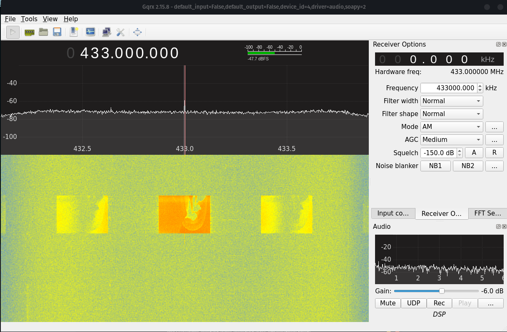
This was something we were for sure looking for ! If there was one thing I learned from playing CTFs is always to be very patient while doing these type of challenges, and to no surprise after a few minutes I spotted a curly closing brace } which hints that other parts of the flag are to come.
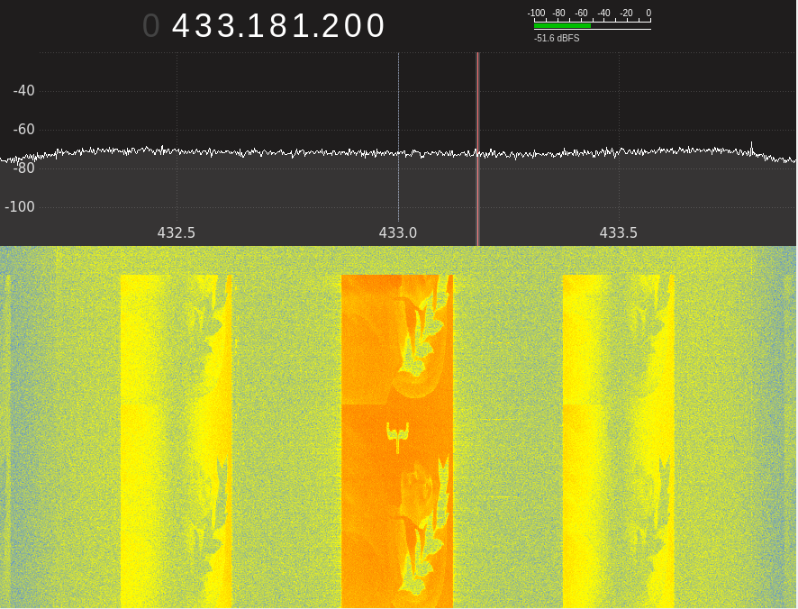
By waiting for about 3-4 minutes,I ended up putting the pieces of the flag together character by character.In the end we got the flag and the first blood 🩸!
Almost Perfect Remote Signing
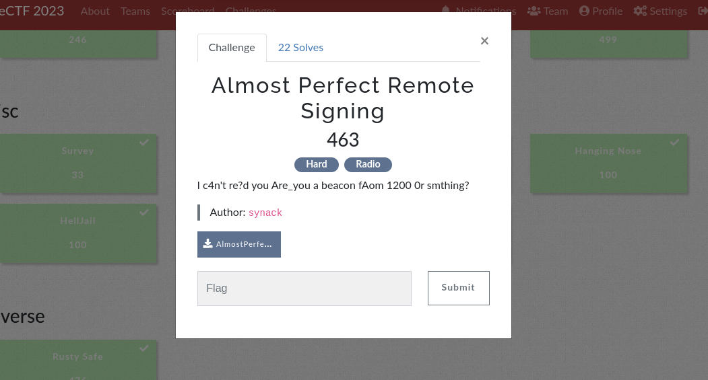
Difficulty: Hard
Category: Forensics
Flag: DANTE{FLAG_REPORTING_SYSTEM}
In this challenge, we are given a .wav file with the flag hidden somewhere inside it. Listening to the file yields nothing but ~8 seconds of what sounds like static noise, so we know the flag is encoded inside the sound data somehow. Running the file through steg tools like Binwalk and WavSteg doesn’t reveal much, and LSB analysis doesn’t show any signs of the image being encoded in the bits of the file. At this point, I opened the file in Sonic Visualiser to see what secrets may be encoded in the spectrogram or frequency information of the sound data. Examining the spectrogram, I saw something interesting:
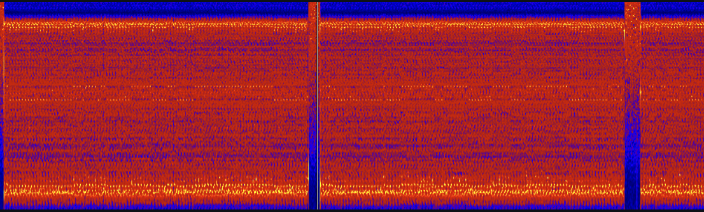
There is a faint binary signal present in the spectrogram! This discovery led me to think that the flag was encoded in the sound data in binary manner somewhow (using 0’s and 1’s). Being a novice in the area of digital signal processing, I had to do a significant amount of research to determine how this is achieved - via AFSK (Audio Frequency Shift Keying). In this protocol, binary data is modulated onto a continuous analog signal for long-distance transmission (e.g., radio). To decode this manually would be a real hassle, so I looked up tools to automate the process. After trying and failing with tools like GnuRadio, I stumbled upon multimon-ng. This tool will demodulate the signal and output the encoded data automatically, as long as it knows the exact protocol being used. There are several AFSK protocols to choose from:
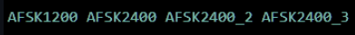
And I ended up choosing AFSK1200 to start with (which turned out to be the right choice!).
This tool requires the .wav file to be in .raw format, which can be achieved using sox:
sox -t wav aprs_out.wav -esigned-integer -b16 -r 22050 -t raw aprs_out.raw
This command essentially takes the wave file and converts it to .raw format. Notice the sampling rate of 22050Hz being used here, which is the standard for these types of radio transmissions. Once this is done, we can use multimon-ng to decode the signal:
multimon-ng -t raw -a AFSK1200 aprs_out.raw > flag
After doing those steps the decoded data looks something like this.
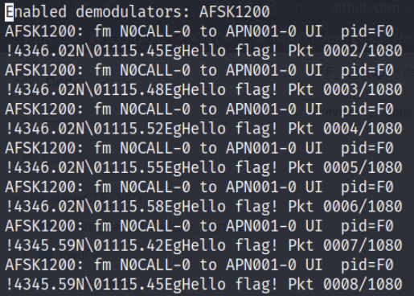
We are definitely on the right track - we can see “Hello flag!” in every packet. If we scrutinize the data closely, we can see that there are slightly different coordinates used in each packet transmission:
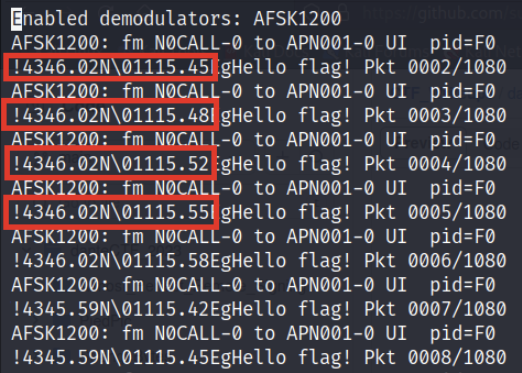
Is the flag encoded in these coordinates somehow? Plotting these coordinates on a Cartesian coordinate system yields:
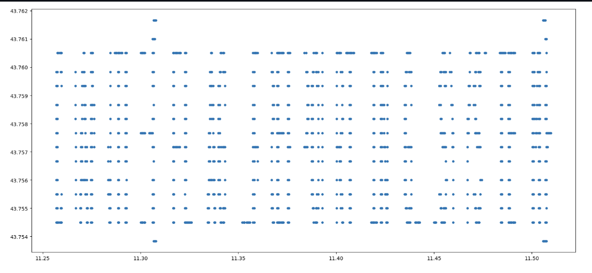
It’s not pretty, but zooming in around small groups of characters can help us read the flag characters:
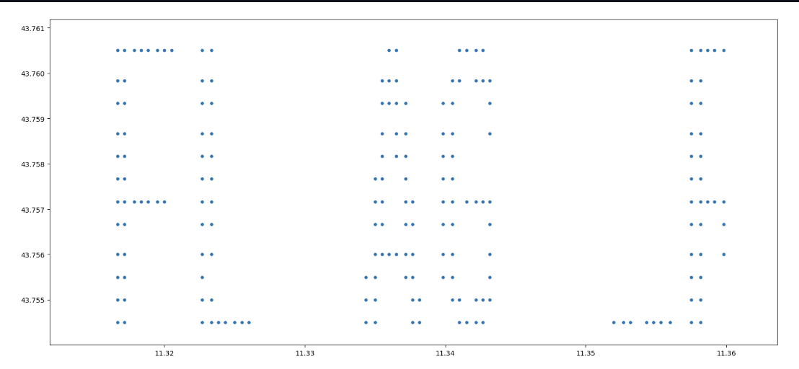